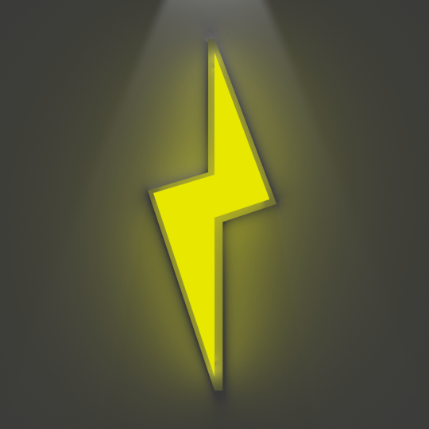

Low Voltage

Low Voltage is a radio show on Tuesdays from 9pm to 10pm on WIIT focusing on the softer side of Electronic music.
Tune in for a wide variety of music from the softer sounds of well known artists like deadmau5 and Daft Punk to
less recognized artists like Breakbot and Röyksopp.
Show Info & Playlists
Playlists are posted the night after the show ends (usually), and shows with the playlist up will have this icon: